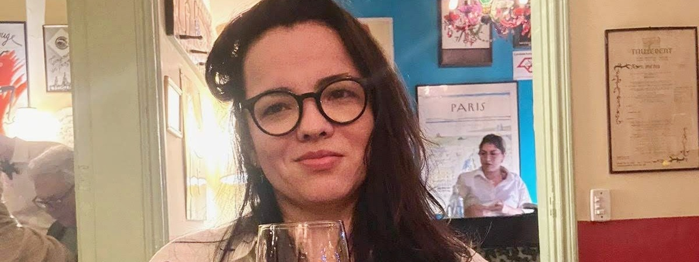

<div class="row align-items-center default-container">
  <div class="col-lg-8">
    <div class="content">
      <div class="content-left">
        <h2 class="default-topic">Sobre mim.</h2>
        <p class="default-p">
          Meu nome é Giuseppe Mota e sou fascinado por
          <span class="default-highlight"
            >tecnologia e o desenvolvimento de soluções inovadoras</span
          >.
        </p>
        <p>
          
        </p>
        <p class="default-p">
          Sou desenvolvedor de software e engenheiro brasileiro. Desde o início
          da minha jornada acadêmica e profissional, me interessei por códigos e
          lógica de programação. Por meio das linguagens C e C++, resolvi
          desafios da engenharia de produção e da indústria com uma abordagem
          <span class="default-highlight">tecnológica e modernizada</span>.
        </p>
        <p class="default-p">
          Nos últimos períodos da graduação, me dediquei aos sistemas
          computacionais e me aventurei no mundo dos sistemas web. Durante minha
          residência em software no CEPEDI, fui alocado no time de
          desenvolvimento da Ingenico Brasil, onde atuei como desenvolvedor
          fullstack e líder do projeto
          <span class="default-highlight">"2D Barcode"</span>.
        </p>
        <p class="default-p">
          Ao longo da minha trajetória, tive a oportunidade de trabalhar com
          <span class="default-highlight">diversas tecnologias</span> e em
          diferentes mercados, aprimorando habilidades técnicas e
          <span class="default-highlight">desenvolvendo soft skills</span>.
          Tenho experiência em lógica de programação, desenvolvimento ágil de
          software, APIs RESTful, bancos de dados relacionais e não relacionais,
          Azure DevOps e SCRUM, além de colaborar em projetos com equipes
          multiculturais.
        </p>
        <p>
          
        </p>
        <p class="default-p">
          No aspecto pessoal, sou apaixonado por
          <span class="default-highlight">metodologias ágeis</span>,
          <span class="default-highlight">gestão de processos</span>, animes,
          esportes eletrônicos, e tecnologias que potencializam a
          <span class="default-highlight">colaboração em equipe</span>. Tenho um
          perfil proativo e orientado por dados, com experiência em trabalho
          remoto e presencial. Sou entusiasta de
          <span class="default-highlight">empreendedorismo</span> e da
          <span class="default-highlight"
            >construção de times de alta performance</span
          >.
        </p>
        <p class="default-p">
          Estou sempre em busca de
          <span class="default-highlight">aprender e evoluir</span>,
          adaptando-me a novas tecnologias e metodologias. Meu objetivo é criar
          soluções de software
          <span class="default-highlight"
            >eficientes, escaláveis e centradas no usuário</span
          >. Seja no desenvolvimento front-end, back-end ou full-stack, sou
          apaixonado por cada aspecto do processo de criação.
        </p>
        <div class="content">
          <div class="content">
            <h2 class="default-topic">Entre em contato.</h2>
            <p class="default-p">
              Me siga nas redes sociais, confira meu repositório no GitHub com
              os principais projetos ou
              <span class="default-highlight"
                >entre em contato para marcar uma reunião</span
              >. Ficarei feliz em entender como minhas
              <span class="default-highlight"
                >habilidades em resolução de problemas</span
              >
              podem ajudar a
              <span class="default-highlight"
                >superar os desafios do seu projeto</span
              >.
            </p>
            <button>
              <a routerLink="/contact"> > Enviar mensagem </a>
            </button>
          </div>
        </div>
      </div>
    </div>
  </div>
</div>
